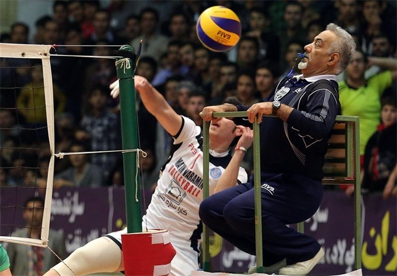

Судьи в волейболе и их обязанности
- Первый судья. Он выполняет свои обязанности, сидя или стоя на судейской вышке, которая расположена у одного из концов сетки.
- Второй судья. Находится за пределами игровой площадки около стойки, на противоположной стороне от первого судьи.
- Секретарь. Секретарь выполняет свои обязанности, сидя за столиком секретаря на противоположной стороне от первого судьи.
- Четыре (два) судьи на линии. Контролируют боковую и лицевую линии.
- Для официальных соревнований FIBV обязателен ассистент секретаря.

Назад